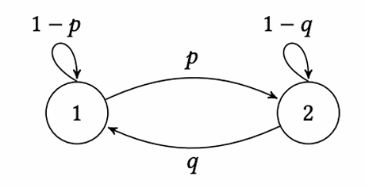
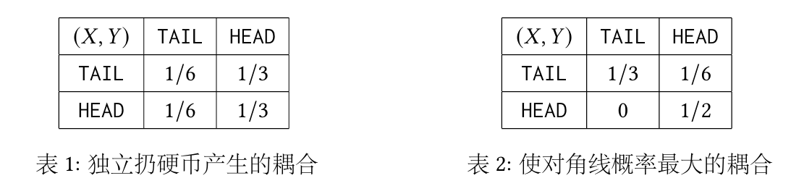
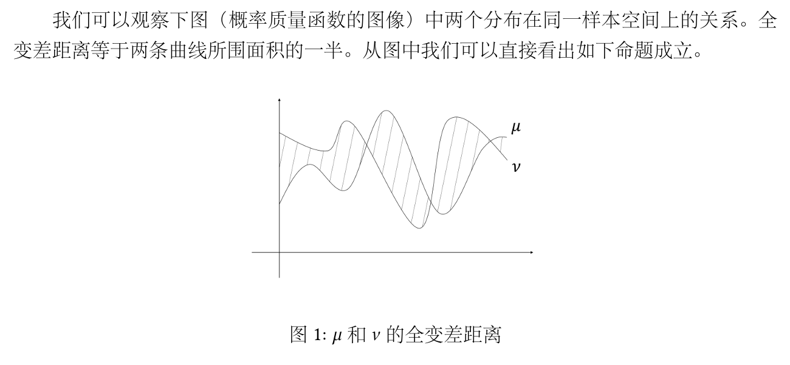

马尔可夫链
阅读信息
1292 词 8 分钟 本页总访问量 加载中...
Discrete Markov Chain
Given a sequence of variables \(X_1, X_2, \ldots\), \(X_i \in \Omega\) where \(\Omega\) is a countable set. inference
Then we call \(\{X_t\}\) a Markov chain.
In a Markov chain, law of \(X_{t + 1}\) is determined by \(X_t\). Assume \(X_t \in \Omega = [N]\), let matrix
If \(\boldsymbol{P}^{(t)}\) does not change with time \(t\), then the Markov chain is called a time-homogeneous Markov chain.
\(\boldsymbol{P}\) is called the transition matrix of the (time-homogeneous) Markov chain.
So we can describe a (time-homogeneous) Markov chain by a weighted directed graph with \(N\) vertices (transition graph). The state change on the chain can be view as the random walk on the graph.
At time \(t\), we denote \(X_t\)'s law by \(\boldsymbol{\mu}_t\), i.e.
The according to the law of total probability,
and
By observation
And
it is called Chapman-Kolmogorov Equation
Stationary Distribution
If a distribution \(\pi\) does not change under a Markov chain, i.e.
Then we call the distribution \(\pi\) is \(P\)'s stationary distribution (S.D.).
View a discrete distribution as a vector
Now if we introduce a distribution \(\pi\), then
Markov Chain Monte Carlo (MCMC) Algorithm:
Design a Markov chain and let its stationary distribution be \(\pi\).
Begin with a distribution and simulate the chain for a few steps to get the final distribution \(\mu_t\).
We hope when \(t\) is big enough, \(\mu_t\) approaches \(\pi\)
Existence of S.D.
If a S.D. \(\pi\) exists, then \(\boldsymbol{P}^T \boldsymbol{\pi} = \boldsymbol{\pi}\), i.e. \(\boldsymbol{P}\) has a eigenvalue \(1\).
Noting that \(\boldsymbol{P}^T \boldsymbol{1} = \boldsymbol{1}\) by \(\boldsymbol{P}\)'s definition, so \(\boldsymbol{P}^T\) has a eigenvector \(\boldsymbol{v}\). Let \(\boldsymbol{\pi} = |\boldsymbol{v}|/\Vert \boldsymbol{v}\Vert\).
Noting that
Assume there exists \(\boldsymbol{v}(j)\), the "\(=\)" does not hold, then
Uniqueness and Convergence
Not always unique → Not always converge

Let \(\boldsymbol{P} = \begin{pmatrix} 1 - p & p \\ q & 1 - q \end{pmatrix}\), then we know that the S.D. is \(\boldsymbol{\pi} = \left(\dfrac{q}{p + q}, \dfrac{p}{p + q}\right)\).
Let a input \(\boldsymbol{\mu}_0 = (\mu_0(1), \mu_0(2))\). Let \(\Delta_t = \left|\mu_t(1) - \dfrac{q}{p + q}\right|\).
After recurring, we know that \(\Delta_t = |1 - p - q|\Delta_{t - 1}\), i.e. \(\Delta_t = |1 - p - q|^t\Delta_0\)
So \(\boldsymbol{\mu}_t\) does not converge iff. \(p = q = 0\) or \(1\) (Always turns to itself → not unique or turns to the counterpart → unique but not converge)
For the first case (\(p = q = 0\)), we have
Reducible and irreducible
A Markov chain is irreducible iff. the transition graph is strongly connected.
If the Markov chain is irreducible, then the S.D. of it is unique. (Prove later...)
For the second case (\(p = q = 1\)), we have
Periodic and Aperiodic
For all status on a Markov chain \(v\), we say the chain is Aperiodic iff
here \(C_v\) is all the cycle contains \(v\).
Or if there exists a \(v\) s.t. \(\operatorname{gcd}(|c|: c \in C_v) \neq 1\) (consider the distribution with only \(v = 1\), the probability of \(v\) after \(k\) steps (\(\operatorname{gcd} \not |\ k\)) must be \(0\)!), then the chain is periodic
Fundamental Theorem of Markov Chain
If a Markov chain \(P\) is:
- [F] Finite
- [IR] Irreducible
- [AP] Aperiodic
Then \(P\) has a unique [U] stationary distribution \(\pi\) and \(\forall \mu_0, \mu_t \to \pi\) [C], i.e.
Coupling
Let two distributions \(\mu \in \Omega_1, \nu \in \Omega_2\), let \(\omega(x, y), x \in \Omega_1, y \in \Omega_2\), if \((X, Y) \sim \omega\) and \(X \sim \mu, Y \sim \nu\), then we call \(\omega\) the coupling of \(\mu\) and \(\nu\).
The union distribution is a special case of coupling.

Total Variation Distance
Two distributions \(\mu, \nu\) on \(\Omega\), the total variation distance is

Let \(\mu(A) = \sum_{x \in A}\mu(x)\), then
Compare of Random Graphs
Given \(n\) vertices, add a edge \(e_{ij}\) on a probability of \(p\), then we denote the random graph \(G \sim \mathcal{G}(n, p)\).
Let \(G_1 \sim \mathcal{G}(n, p_1), G_2 \sim \mathcal{G}(n, p_2), p_2 \geq p_1\), then we want to prove
It is hard to compute point by point.
Define a coupling of \(\mathcal{G}(n, p_1)\) and \(\mathcal{G}(n, p_2)\): \(\omega\). Let \((G_1, G_2) \sim \omega\). On edge \(e_{ij}\), we randomly choose a number \(t\) on \([0, 1]\). If \(t \in [0, p_1]\), add edge \(e_{ij}\) on \(G_1\); if \(t \in [0, p_2]\), add edge \(e_{ij}\) on \(G_2\). Then obviously (If \(e_{ij}\) was chosen in \(G_2\), it must be chosen in \(G_1\))
By coupling, we reduce the two random number \(p_1, p_2\) to one (the random number in \([0, 1]\))
Coupling Lemma
For all \(\mu, \nu\)'s coupling \(\omega\),
and there exists a \(\omega^*\) achieving equality (greedy)
Proof
Denote \(a \land b = \min\{a, b\}, a \lor b = \max\{a, b\}\)
So
Proof of the Fundamental Theorem of Markov Chain
First we prove that under [IR] + [AP], given any \(i, j\), \(\exists t^*, \forall t \geq t^*, \boldsymbol{P}^t(j \to i) > 0\).
Assume there exists a path of length \(t_0\) from \(j\) to \(i\), and \(j\) has self cycle \(c_1, \ldots, c_m\), then given a big enough \(t^*\), for all \(t > t^*\), we know that \(\sum_{i = 1}^m |c_i|x_i + t_0 = t\) must have positive integer solution \(\{x_i\}\) (due to \(gcd(|c_i|) = 1\) and the Bézout Identity)
Then we gonna prove that \(\operatorname{TV}(\mu_t, \pi) \to 0\).
Let \((X_t), (Y_t)\) be two Markov chain with transition matrix \(\boldsymbol{P}, \boldsymbol{Q}\). We say \((X_t, Y_t)\) is a coupling of \((X_t), (Y_t)\) iff.
Now we let \(Y_0 \sim \pi\) (the stationary distribution) and \(X_0 \sim \mu_0\) (a random distribution), and we gonna construct a coupling of \(X_t, Y_t\) and prove \(\forall t, \operatorname{TV}(\mu_{t + 1}, \pi) \leq \operatorname{TV}(\mu_t, \pi)\)
Let the \(\omega^*_t\) be the optimal coupling of \(\mu_t, \pi\), i.e.
then construct a coupling \(\omega_{t + 1}\).
Draw \((X_{t}, Y_{t}) \sim \omega_t^*\)
- If \(X_t \neq Y_t\), then let \(X_t, Y_t\) evolve independently to \(X_{t + 1}, Y_{t + 1}\).
- If \(X_t = Y_t\), then let \(X_t\) evolve to \(X_{t + 1}\) and \(Y_{t + 1} = X_{t + 1}\)
Obviously \(X_{t + 1} \sim \mu_{t + 1}\) and \(Y_{t + 1} \sim \pi\).
Knowing that \(\exists t^*, \forall i, j, \boldsymbol{P}^{t^*}(j \to i) > 0 (\geq \delta > 0)\), then define \(\boldsymbol{Q} = \boldsymbol{P}^{t^*}\). By the monotonicity of \(\operatorname{TV}(\mu_t, \pi)\), \(\boldsymbol{P}\)'s convergence equals to \(\boldsymbol{Q}\)'s convergence. Now we consider the Markov chain of \(\boldsymbol{Q}\). Construct the coupling of \(X, Y\) as before, then
By induction, \(\mathbb{P}[X_t \neq Y_t] \leq (1 - N\delta^2)^t \to 0\)
Reversible Markov Chain
A MC \(P\) is reversible if there exists a distribution \(\pi\),
(detailed balance conditions)
easily we can know that \(\pi\) must be \(P\)'s stationary distribution.
here \([\mathrm{IR}] \Leftrightarrow \text{connected}\), \([\mathrm{AP}] \Leftrightarrow \text{Has a odd cycle}\)
Examples
Pure random walk, then S.D. is the uniform distribution
A graph with \(P(i, j) = d_i\) → \(\pi(i) \propto d_i\)
Metropolis-Hastings Algorithm
Given a \(\pi\), design a Markov chain s.t. \(\pi\) is \(P\)'s S.D.
Randomly choose a connected undirected graph and let \(\Delta\) be the maximum degree of the graph (exclude self-cycle). (\(\displaystyle\Delta := \max_{i \in [N]}\sum_{j \neq i}\mathbf{1}[{i, j} \in E]\))
Randomly choose \(k \in [\Delta + 1]\), and vertex \(i\) with \(\operatorname{deg}i = d\) (\(i\)'s neighbours are \(j_1, \ldots j_d\))
- If \(d + 1 \leq k \leq \Delta + 1\), skip
- If \(k \leq d\), move to \(j_k\) with the probability of \(\min\left\{\dfrac{\pi(j_k)}{\pi(i)}, 1\right\}\)
Then
and by some calculation, the MC is a reversible MC, so the MC is feasible.
Why we add \(\Delta + 1\)
Add a self-cycle in each vertex to satisfy \([\mathrm{AP}]\)
Convergence Speed and Mixing Time
Mixing Time is the minimum step \(t\) s.t. for all init distribution running \(t\) times on a MC, the final distribution is not so far from the S.D.
Sometimes \(\tau_\mathrm{mix}\) specifically denote \(\tau_\mathrm{mix}(1/4)\)
Random walk on super cube
\(\Omega = \{0, 1\}^n\) and \(X_{t + 1} = X_t\) w.p. \(1/2\)
Then \(\mathbb{P}[X_t \neq Y_t] = \mathbb{P}[\exists i X_t(i) \neq Y_t(i)] \leq n\mathbb{P}[X_t(1) \neq Y_t(1)] = n \left(1 - \dfrac{1}{n}\right)^t \leq n \mathrm{e}^{-t / n} \leq \varepsilon\)
By default we only consider time-homogeneous Markov chain.